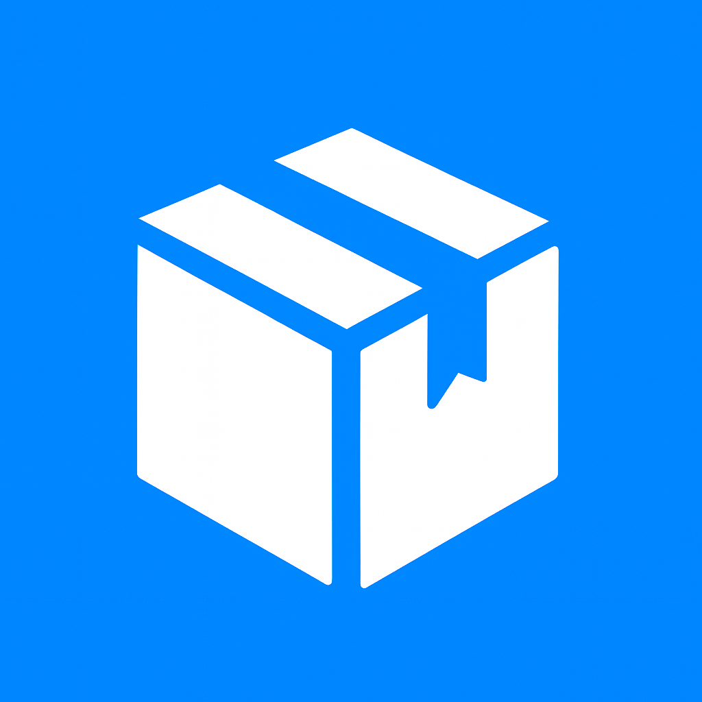

Guida Utente Completa
Conta Colli è un'applicazione professionale progettata per tracciare e monitorare il conteggio dei colli durante i turni lavorativi. L'app offre funzionalità avanzate di cronometraggio, statistiche dettagliate e sincronizzazione dei dati.
Tracciamento accurato del tempo per ogni lista e pausa, con timer in tempo reale.
Grafici e metriche avanzate per analizzare le tue performance nel tempo.
Obiettivi personalizzabili per media oraria o numero totale di colli.
Monitoraggio in tempo reale con Dynamic Island e Lock Screen.
Sincronizzazione su iCloud con backup manuali esportabili.
Aggiungi note e commenti a ogni turno per tracciare informazioni importanti.
Riprendi turni precedenti dallo storico e continua dal punto in cui avevi lasciato.
Confronti temporali e tendenze per migliorare costantemente.
Il timer inizia automaticamente quando premi "Inizia Lista" e continua a contare fino a quando non metti in pausa o registri la lista successiva.
Viene visualizzato un banner verde per l'obiettivo colli/ora e blu per l'obiettivo numero di colli.
La sezione storico offre multiple modalità di visualizzazione dei dati:
Quando riprendi un turno, per evitare di azzerare e perdere completamente i progressi, il tasto "Nuovo Turno" è disabilitato. Il turno va chiuso o con swipe sulla card della lista in corso o dal menu azioni turno "Chiudi Turno".
Obiettivo basato sui colli processati per ora di lavoro effettivo. Ideale per misurare la velocità di lavoro.
Obiettivo basato sul totale di colli processati nel turno. Perfetto per raggiungere target giornalieri specifici.
Puoi creare diverse soglie come "Base" (300 colli/h), "Buono" (350 colli/h), "Eccellente" (400 colli/h) per monitorare diversi livelli di performance.
Il ripristino da backup sostituisce completamente tutti i dati correnti. Assicurati di avere un backup recente prima di procedere.
Le Live Activities mostrano informazioni in tempo reale del turno corrente direttamente sul tuo iPhone:
Cambia colore in base allo stato del turno:
Blu = Attivo
Arancione = Pausa
Numero di colli aggiornato in tempo reale mentre lavori.
Informazioni essenziali sempre visibili nella parte superiore dello schermo.
Soluzioni:
Soluzioni:
Soluzioni:
Soluzioni:
Per problemi persistenti o richieste di funzionalità: